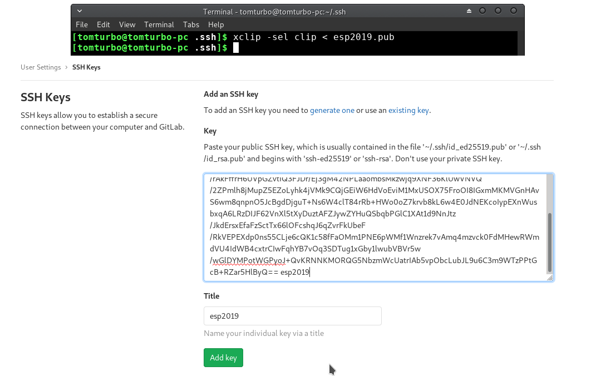
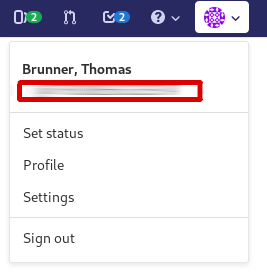
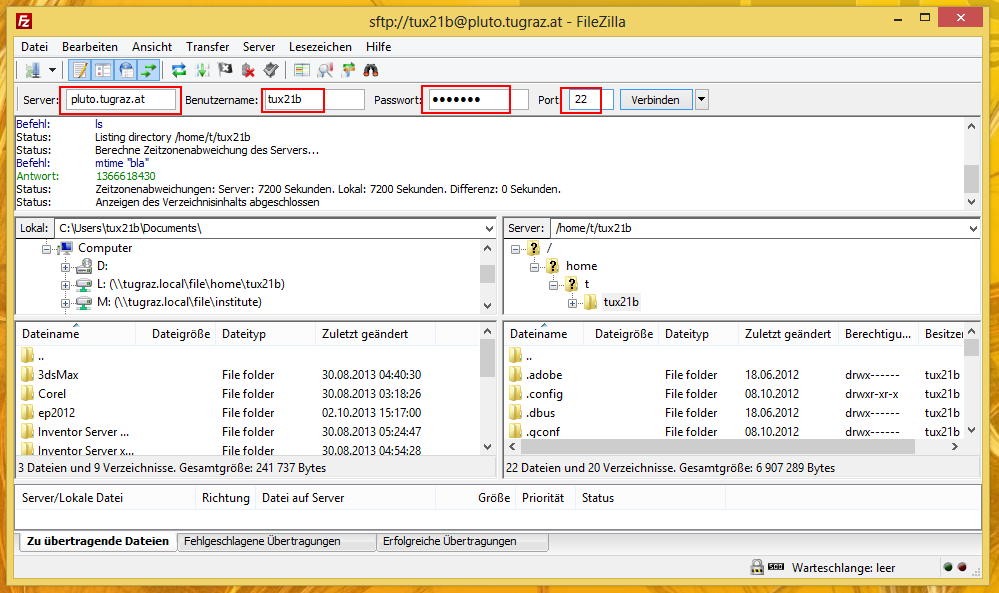

- Fragen zur Vorlesung
- Hilfestellungen zu den Beispielen
- Betreutes Arbeiten
- Besprechung häufiger Fehler
- Erarbeiten ähnlicher Beispiele
- Eure Vorschläge?
Tutoriumsinhalt
Die VM
- In der Virtuellen Maschine sollten alle erforderlichen Programme und Abhängigkeiten vorinstalliert sein.
- Als Referenzplatform wird Ubuntu 18:04 verwendet
- Die Abhängigkeiten für das Testscipt können im Readme.md file nachgelesen werden. Falls man die virtuelle Maschine nicht verwenden will.
Installation der VM
-
Virtualbox herunterladen und installieren
https://www.virtualbox.org/wiki/Downloads - Die virtuelle Maschine von progpipe.tugraz.at herunterladen.
-
Unter tools die VM hinzufügen

Abhängigkeiten des Testscripts
- clang
- ctags
- python 3
- pip3 install pexepect
- pip3 install pyaml
- pip3 install diff-match-patch
Erstellen des Repositorys
-
Einloggen auf gitlab.tugraz.at
Dabei wird die Git ID generiert
- Einloggen auf progpipe.tugraz.at
- Das aktuelle Assignment wird bei der Ausgabe angezeigt.
- Mit dem Create Button ein neues Git Repository für das anstehende Assignment erstellen.
- Der Link zum Repository wird angezeigt(wenn alles geklappt hat)
SSH-Key erstellen und hochladen
SSH-Key erstellen

SSH-Key hochladen
Gitlab ID
Wichtig! Die git ID sollte zwischen 16 und 32 Zeichen haben!
Ist dies nicht der Fall:
prog-tutor-tbrunner@iicm.edu

Das Repository clonen
- cd Ordner wechseln
- mkdir Ordner erstellen
- git clone Git repository auf den Rechner clonen
- git pull Holt die aktuelle Version von gitlab

Das erste C Programm
Die Änderungen commiten
- git add Files zum aktuellen Commit hinzufügen
- git commit "Das Paket zuschnüren"
- git push Den commit auf den gitlabserver schieben
- git tag Den commit taggen (Für die Abgabe)
- git push --tags Den tag auch pushen!!!
- git init Lokales Repo erstellen

Ausführen der Testscripts
- python tc_runner Ausführen der Tests
- python tc_report Erstellen eines "schönen" HTML report (unter results)(WIP ^^)
Testcase report

EP Tutoren
| LV | Termin | Tutor | Kontakt |
|---|---|---|---|
| Gruppe A | Mi, 8:00 - 10:00 | Paul Nagele | prog-tutor-paul@iicm.tugraz.at |
| Gruppe B | Mi, 18:00 - 20:00 | Paul Nagele | prog-tutor-paul@iicm.tugraz.at |
| Gruppe C | Mi, 12:00 - 14:00 | Thomas Schwar | prog-tutor-schwar@iicm.tugraz.at |
ESP Tutoren
| LV | Termin | Tutor | Kontakt |
|---|---|---|---|
| Gruppe 1 | Mo, 08:00 - 10:00 | Fabian Rauscher | prog-tutor-rauscher@iicm.tugraz.at |
| Gruppe 2 | Mo, 10:00 - 12:00 | Martin Haubenwallner | prog-tutor-haubenwallner@iicm.tugraz.at |
| Gruppe 3 | Mo, 12:00 - 14:00 | Florian Hager | prog-tutor-fhager@iicm.tugraz.at |
| Gruppe 4 | Mo, 14:00 - 16:00 | Mathias Kahr | prog-tutor-kahr@iicm.tugraz.at |
| Gruppe 5 | Mo, 16:00 - 18:00 | Michael Hancianu | prog-tutor-michael@iicm.tugraz.at |
| Gruppe 6 | Mo, 18:00 - 20:00 | Michael Hancianu | prog-tutor-michael@iicm.tugraz.at |
| Gruppe 7 | Di, 8:00 - 10:00 | Marcel Nageler | prog-tutor-marcel@iicm.tugraz.at |
| Gruppe 8 | Di, 10:00 - 12:00 | Thomas Brunner | prog-tutor-tbrunner@iicm.tugraz.at |
| Gruppe 9 | Di, 12:00 - 14:00 | Roman Walch | prog-tutor-roman@iicm.tugraz.at |
| Gruppe 10 | Di, 14:00 - 16:00 | Philip Loibl | prog-tutor-ploibl@iicm.tugraz.at |
| Gruppe 11 | Di, 16:00 - 18:00 | Florian Bernhardt | prog-tutor-fbernhardt@iicm.tugraz.at |
| Gruppe 12 | Di, 18:00 - 20:00 | Florian Hirner | prog-tutor-fhirner@iicm.tugraz.at |
Resourcen
- Wiki:
- https://palme.iicm.tugraz.at/wiki/EP
https://palme.iicm.tugraz.at/wiki/ESP - Abgabesystem:
- https://palme.iicm.tugraz.at
- Tutorium:
- http://progslides.github.io/ws18
- Newsgroup:
- https://news.tugraz.at/
-
- tu-graz.lv.e(s)p
- tu-graz.lv.e(s)p.organisatorisches
- tu-graz.lv.e(s)p.uebungsgruppen
Alle nicht persönlichen Fragen ausschließlich in der Newsgroup stellen!
Bewertung
- 1 Verpflichtende Hausübung (unbewertet, muss abgegeben werden)
- Drei bewertete Gruppenbeispiele (jeweils 10 Punkte)
- zweifache Wertung für Ass3
- Eine Klausur (10 Punkte, zweifache Wertung)
- Klausur und Übung müssen positiv sein
- Alle Beispiele müssen rechtzeitig (siehe Abgabenliste im wiki) abgegeben werden!
- Alle Beispiele werden auf Plagiate geprüft!
Bewertung
- Bei allen Beispielen muss ein ernsthafter Versuch erkennbar sein.
- Bewertet wird Programmierstil, Struktur, Korrektheit und Funktionalität.
- Mitarbeit wird durch die Abgabegespräche überprüft.
- Benotet wird ab der Anmeldung zum Gruppenbeispiel.
- Gewichtete Bewertung: Punkte werden anhand der Vollständigkeit eurer Lösung gewichtet.
- Bonuspunkte zählen nur wenn das restliche Programm bereits positiv ist
- Plagiate
Abgabegespräch
- Jedes Gruppenmitglied muss den kompletten Code erklären können
- Programm nicht erklären → bis zu 0 Punkte
- Nicht vorprogrammieren → bis zu 0 Punkte
- Keine Änderungen am Programm durchführen → bis zu 0 Punkte
- Unentschuldigt nicht erscheinen → bis zu 0 Punkte
- Mitschwimmer → bis zu 0 Punkte
- Wenn der Code selbst geschrieben und verstanden wurde - kein Problem!
Kompilieren am Pluto
Schritt 1
In einem Editor nach Wahl (z.B. UltraEdit, Notepad++, Kate, Vim, Emacs, Textmate) eine Datei "hello.c" anlegen:
/* Hello World Example */
#include <stdio.h>
int main()
{
printf("Hallo ESP!\n");
return 0;
}
Schritt 2
Die Datei auf pluto.tugraz.at kopieren:
scp hello.c user@pluto.tugraz.at:

Schritt 3
Zum Pluto verbinden:
ssh user@pluto.tugraz.at

Schritt 4
Das Programm kompilieren:
gcc -std=c11 -Wall -o hello hello.c
| Eingabe | Bedeutung |
|---|---|
| gcc | GNU C Compiler |
| -std=c11 | C Language Standard |
| -Wall | Ausgabe von zusätzlichen hilfreichen Warnungen |
| -o hello | Name der zu erstellenden ausführbaren Datei |
| hello.c | Quellcode |
Ausführen (und Testen):
./hello
Hallo ESP!
Schritt 5
Abgabe laut Abgabeliste(siehe Wiki) packen und auf die Palme hochladen.

Entwicklungsumgebung
- Editor (oder IDE) nach Wahl
- Referenzplattform:
pluto.tugraz.at(Linux)- Benötigte Tools:
gcc,make,valgrind,git - Datenübertragung mittels SFTP
scp prog.c benutzername@pluto.tugraz.at:~/
- Zugang über SSH
ssh benutzername@pluto.tugraz.at
- Benötigte Tools:
- Kompilieren mit:
clang -std=c11 -Wall -o prog prog.c
Linux Befehlsübersicht
| Befehl | Beschreibung |
|---|---|
| pwd | Aktuelles Verzeichnis ausgeben (print working directory) |
| ls | Dateien im aktuellen Verzeichnis auflisten (list) |
| mkdir <name_des_ordners> | Ordner erstellen |
| cd <pfad> | Verzeichnis wechseln (change diretory) |
| cd .. | in das das übergeordnete Verzeichnis wechseln |
| cd | in das $HOME-Verzeichnis wechseln |
| rm <pfad> | Datei löschen (remove) |
| nano <pfad> | Datei bearbeiten (sehr einfacher Texteditor) |
| zip <name_des_archivs> <file_1> <file_2> ... | Zip-Archiv erstellen |
Windows Subsystem for Linux
- Voraussetzung: nur für Windows 10 64-bit
- Windows 10 für Studenten: Dreamspark
- Installationsanleitung: Windows Subsystem for Linux
-
Compiler installieren:
sudo apt update && sudo apt dist-upgrade sudo apt install build-essential
- Kontextmenüeintrag (optional): Download Registry Eintrag und Ausführen.

Viel Erfolg bei HW1!
Abgabeschluss:
- (EP) Di, 9.10.2018 14:00
- (ESP) Do, 15.11.2018 14:00